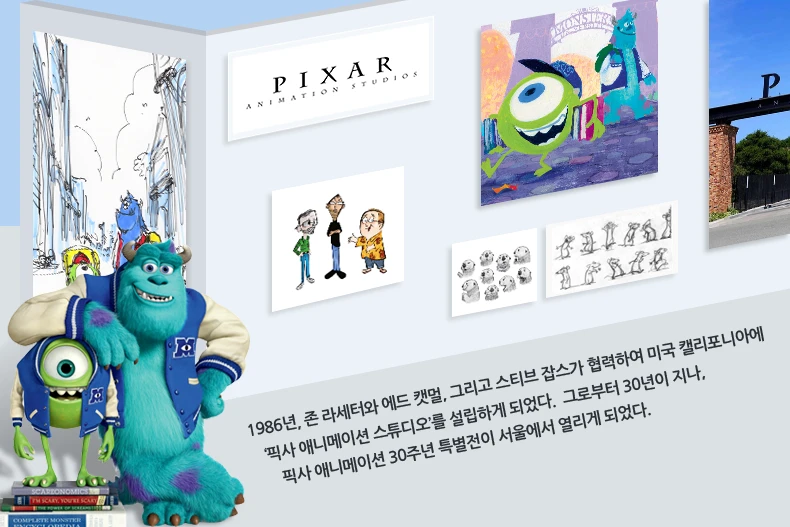

이번 전시에서는 초기 단편 영화에서부터 '토이 스토리', '몬스터 주식회사',
'니모를 찾아서', '업', '인사이드 아웃'을
거쳐 '도리를 찾아서'에 이르기까지
픽사의 각 영화들을 탄생시킨 예술적인 작품들을 소개한다.
'픽사 애니메이션 스튜디오'가 만들어 낸 환상적인 캐릭터와 스토리, 그리고
그들이 살아 숨쉬는 한편의 애니메이션 속 멋진 세계는
디지털 미디어로만 만들어 지는 것이 아니다.
핸드 드로잉, 파스텔 스케치, 페인팅, 조각 등 픽사 아티스트들이 전통적인 방식으로 손수 빚어낸 예술품들로부터 역시, 픽사의 캐릭터, 스토리 그리고 월드가 영화 속에서 그 생명력을 얻게 된다.
이번 전시를 통해 픽사 아티스트들의 무한한 모험심과 상상력이 펼쳐 낸 예술적인 작품 세계를 만날 수 있을 것이다.